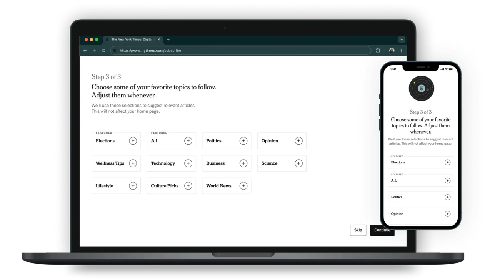
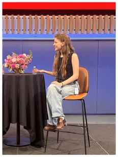
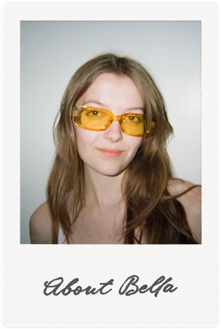
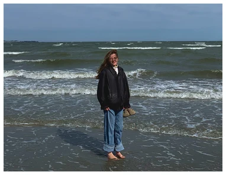
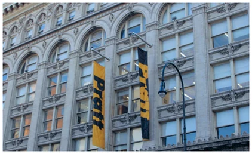
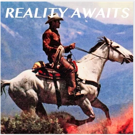
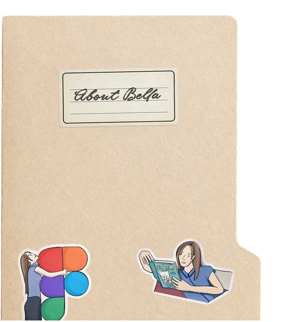
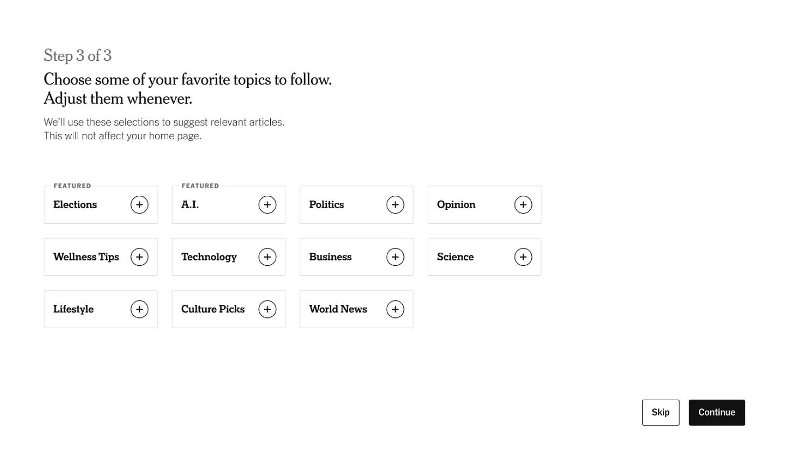
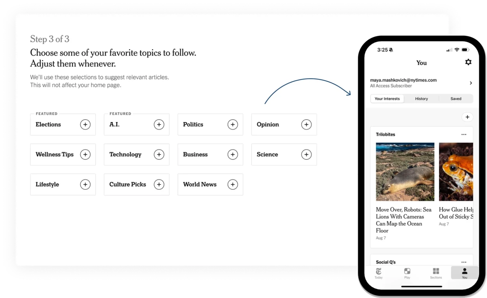
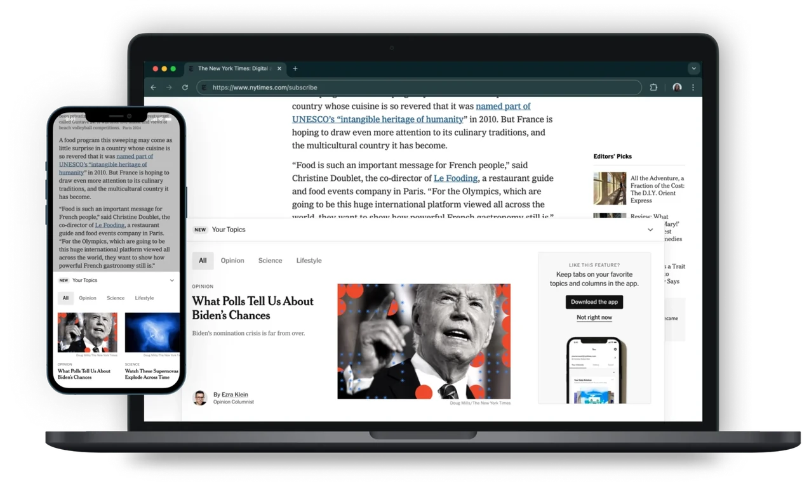

Topic selection in the new subscriber onboarding flow.
A quick, easy-to-read screen prompting users to select areas of interest.








Case study
Serving users tailored content with a new onboarding feature.
June–September 2024
(15 weeks)
3 Product Designers
1 Product Manager
2 UX Researchers
Figma
FigJam
Jira
User research study
User flows
Packaged for dev handoff

About
With our initiative to create a more personalized reading experience in mind, I designed a screen in the onboarding flow to track interest in certain news topics, and a Bottom Sheet component to reflect those topics back to readers.
Design process
Deliverables
Topic selection in the new subscriber onboarding flow.
A quick, easy-to-read screen prompting users to select areas of interest.

Connection to in-app You Tab
Topics selected in web onboarding that correlate directly with a You Tab Interest are collected, and automatically reflected when a user (sub and/or reg) downloads the app and opens the You Tab.

Bottom sheet component
A subtle prompt on article pages to explore and refine interests, incorporating user control and adaptability.

End of case study